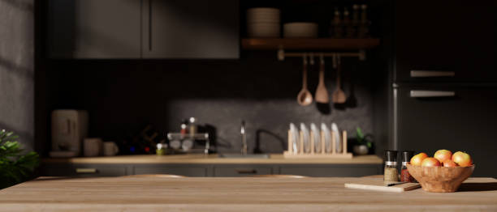
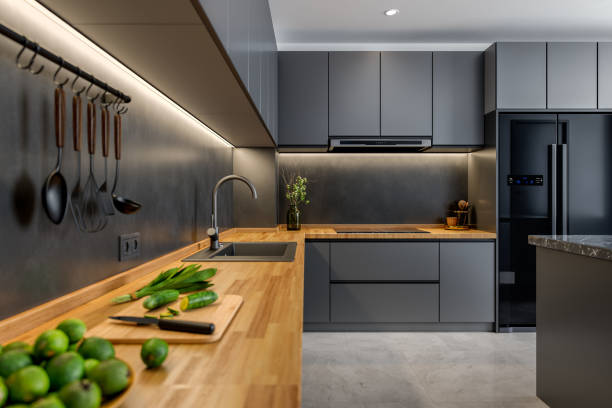
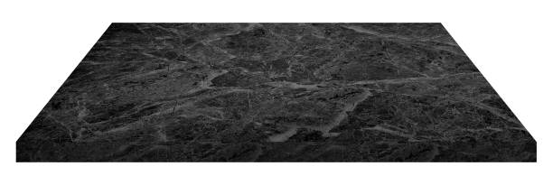
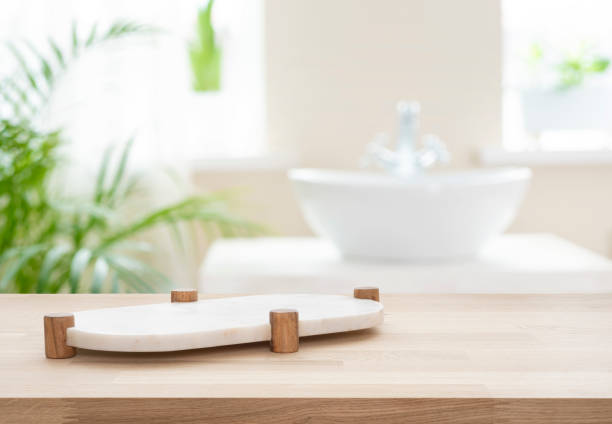
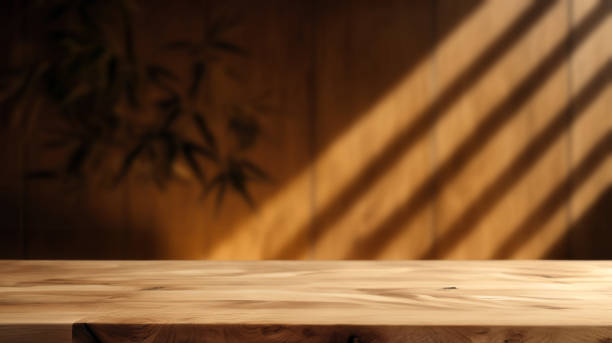

Transform your kitchen with premium countertops from Spring Lake Michigan . Stunning designs, durable materials, and expert installation tailored to your needs. Elevate your home with us today!
Click Here To Call Us (877) 848-1711Looking to upgrade your kitchen or bathroom with durable and stylish countertops? Our countertops company in Spring Lake Michigan specializes in providing top-notch solutions to enhance the beauty and functionality of your space. We offer a wide selection of materials, including granite, quartz, marble, and laminate, ensuring a perfect match for every style and budget.
With years of experience serving homeowners and businesses in Spring Lake Michigan our team takes pride in delivering precise craftsmanship and exceptional customer service. Whether you need custom countertops for a remodel or a full replacement to modernize your property, we’ve got you covered.
Our process is seamless, starting with a free consultation to understand your needs. We guide you through selecting materials, colors, and finishes, ensuring your vision comes to life. Our expert installers use state-of-the-art tools and techniques to ensure a flawless fit and long-lasting results.
When you choose our countertops company in Spring Lake Michigan you’re choosing reliability, affordability, and excellence. We work efficiently to minimize disruptions and complete projects on time. Transform your space today with stunning countertops that combine aesthetics with durability.
Contact us in Spring Lake Michigan for a free estimate and let us bring your countertop dreams to reality!
Residential & commercial Countertops
Quality services at affordable prices
Immediate 24/ 7 emergency services


Choosing the right countertop for your kitchen or bathroom in Spring Lake Michigan is a crucial decision that affects both the functionality and aesthetic of your space. With a wide variety of materials available, it's essential to understand your options to make an informed choice.
Consider Durability and Maintenance: For high-traffic areas like kitchens, granite and quartz countertops are popular due to their durability and low-maintenance qualities. If you're looking for something more eco-friendly, consider recycled materials or bamboo. For bathrooms, materials like marble or engineered stone provide both elegance and resilience to moisture.
Aesthetic Appeal: Your countertop should complement the overall design of your kitchen or bathroom. Light-colored granite or quartz can brighten up a space, while dark tones offer a sleek, modern look. Be sure to consider your cabinet and flooring choices to create a cohesive design that enhances your home's style.
Budget and Installation: The cost of materials can vary widely, so understanding your budget is key. While natural stone may be more expensive, engineered options like laminate or solid surface countertops can offer a more affordable alternative. Be sure to also factor in installation costs when budgeting for your countertop.
Consult a Professional: Choosing the right countertop requires careful thought and expertise. For the best results in Spring Lake Michigan consult with a local professional who can help you select and install the perfect countertop for your kitchen or bathroom needs.
Residential & commercial Countertops
Quality services at affordable prices
Immediate 24/ 7 emergency services
Creating a stylish home bar starts with selecting the perfect countertop that reflects your personal style and enhances your entertaining space. Our countertops for home bars are tailored to meet both functionality and aesthetics, ensuring you have a durable and attractive surface for mixing drinks and hosting guests.
From sleek modern designs to rustic wood options, the right countertop can set the tone for your home bar. Our experienced team assists you in choosing the right material, style, and size, crafting a space that aligns with your vision while maximizing usability.
You should choose us for your home bar countertops because we specialize in custom solutions tailored to your needs. Our dedication to quality craftsmanship and exceptional service means that you’ll receive a product that not only looks great but also enhances your entertaining experience.

As sustainability becomes a priority for homeowners, eco-friendly countertop solutions are in high demand. Our eco-friendly countertop options include materials that are sustainable, recycled, or rapidly renewable, ensuring you make a positive impact on the environment while enhancing your home.
We offer a range of options, from recycled glass to bamboo and reclaimed wood, allowing you to choose a countertop that mirrors your commitment to sustainability. Our team is knowledgeable about the various eco-friendly materials available and can help you select the perfect solution that meets your design preferences.
Why choose us? Our focus on sustainable practices and environmentally responsible products sets us apart in the Spring Lake Michigan area. With a commitment to quality and customer satisfaction, we provide beautiful, eco-friendly countertops that align with your values and aesthetic goals.
Elevate your home with our luxury countertop installation services specializing in high-end materials that exude elegance and sophistication. We provide exquisite options, including rare stones and innovative composites, designed for discerning clients who value craftsmanship and beauty.
Our team works closely with you to understand your vision and ensure the final product perfectly integrates with your home’s design. From unique granite slabs to stunning quartzite and onyx, each installation is customized to elevate your space and reflect your style.
Choosing us for your luxury countertop installation means collaborating with professionals who are dedicated to excellence. Our commitment to sourcing high-quality materials and providing expert installation creates extraordinary spaces that speak volumes about superior taste and style.
In the fast-paced world of commercial kitchens, having the right countertop surface is essential for both functionality and durability. Our commercial kitchen countertop installation services focus on providing robust and efficient surfaces suitable for the rigors of restaurant and catering environments.
We work with various materials, including stainless steel, quartz, and solid surface, ensuring that your kitchen is equipped to handle high volumes of use. Our experts understand industry standards and regulations, allowing us to design and install countertops that meet your specific operational needs.
Choosing us for your commercial countertops means partnering with a knowledgeable team dedicated to your success. Our commitment to quality craftsmanship and timely service minimizes disruptions to your operations, ensuring you have reliable surfaces that enhance productivity and workflow.

The countertops in your retail space can significantly influence customer perception and enhance the shopping experience. Our retail store countertop installation services focus on creating beautiful, functional, and inviting displays.
What sets us apart for retail solutions? We offer a diverse selection of materials and designs tailored to your business's branding and style. Our experienced team understands the importance of presenting products attractively while providing durable surfaces suitable for heavy daily use. We collaborate closely with you to ensure your new countertops enhance your store's aesthetics and functionality. Let us help you create a welcoming environment that encourages customer engagement!
For hotels and restaurants, the ambiance and functionality provided by countertops are crucial in leaving a lasting impression on guests. Our specialized countertop solutions for hotels and restaurants in Spring Lake Michigan are tailored to meet high standards of design and durability.
Why choose us for your hospitality countertop needs? We are experts in providing solutions that blend aesthetics with practicality, ensuring your surfaces are not only beautiful but can withstand frequent use. We work with designers and architects to deliver customized solutions that align with your establishment's vision. Our attention to detail and commitment to quality craftsmanship ensure that your hotel or restaurant will impress guests while enhancing operational efficiency. Trust us to create exceptional countertops that elevate your hospitality space!

Create a productive and stylish workspace with our office countertop installation service . We specialize in providing a variety of countertop solutions that cater to the unique needs of offices, from reception areas to workstations. Our countertops are designed to enhance functionality while creating a professional atmosphere.
Why choose us? Our team understands that the office environment should be a blend of beauty, comfort, and practicality. We offer materials that suit all styles, ensuring your office space reflects your company culture while supporting daily operations. Our expert installation guarantees workspaces that function seamlessly while providing aesthetic appeal. Upgrade your workplace with our professional office countertop installation services .

In demanding environments like medical facilities and laboratories, hygiene and durability are key components to consider for countertops. Our specialized countertop services for medical and laboratory settings in Spring Lake Michigan cater to those critical needs.
Why choose our services? We understand the stringent requirements of medical and lab environments, offering materials that are easy to clean, resistant to chemicals, and built to last. Our experienced team ensures proper installation, meeting all health and safety regulations. We work closely with facility managers to provide customized solutions tailored to their unique space. Trust us to deliver countertops that are safe, efficient, and suitable for even the most sensitive environments!
Years Experience
Expert Technicians
Satisfied Clients
Compleate Projects
When it comes to choosing the perfect countertops for your home or business in Spring Lake Michigan ohmy kitchen stands out as the trusted leader. With years of experience and a passion for quality craftsmanship, we specialize in providing a wide variety of countertops to fit every style and budget. Whether you’re remodeling your kitchen or upgrading your bathroom, our team offers expert guidance and top-tier products that transform spaces.
Our extensive selection includes granite, quartz, marble, and more, each handpicked for durability, beauty, and functionality. At ohmy kitchen, we understand that your countertops are an investment, which is why we offer only the best materials designed to last for years while maintaining their stunning appearance.
Why settle for less when you can have the best? Our team is committed to providing personalized services, ensuring that every project reflects your unique preferences and needs. We handle every detail from design to installation, guaranteeing a seamless experience. Whether you're renovating your kitchen or bathroom, our knowledgeable experts will help you select the perfect countertop to match your vision.
ohmy kitchen offers competitive pricing, exceptional customer service, and timely delivery. We pride ourselves on creating long-lasting relationships with our customers in Spring Lake Michigan . Choose ohmy kitchen today, and let us turn your countertop dreams into reality!
Granite countertops are a popular choice for homeowners and businesses alike due to their durability, beauty, and resistance to heat and scratches. When you choose granite for your countertops, you're not just investing in a surface; you're investing in a timeless addition to your space that can withstand the test of time. Our granite countertop installation services in Spring Lake Michigan are unmatched, thanks to our highly skilled team who meticulously handles every aspect of the project. We offer a vast selection of colors and patterns, ensuring you find the perfect granite that complements your aesthetic.
Why should you choose us for your granite countertop installation? We pride ourselves on our commitment to quality and customer satisfaction. Our experienced professionals not only install your countertops but also provide expert advice on the best options available for your specific needs. Additionally, we utilize advanced tools and technology to ensure precise cuts and fitting, resulting in a flawless finish that enhances your kitchen or bathroom.
With years of experience serving the Spring Lake Michigan area, we have built a reputation for excellence. Our granite countertops are sourced from reliable suppliers, ensuring that you receive only the highest quality materials. Moreover, our team follows strict installation protocols that guarantee durability and excellent performance. Choosing us means you can expect a seamless process from consultation to post-installation maintenance.
If you are looking for a high-quality, low-maintenance surface that combines beauty with practicality, look no further than quartz countertops. Renowned for their unique blend of natural and engineered materials, quartz countertops are perfect for any modern kitchen or bathroom setup. Our quartz countertop installation services in Spring Lake Michigan focus on bringing your vision to life with precision and care.
Quartz offers unparalleled versatility in design, allowing you to select from a wide variety of colors and patterns. Our expert installers guide you through each step, ensuring that the final product aligns perfectly with your style and functionality requirements. We believe that every detail counts, which is why our team approaches each installation with the utmost dedication.
Choosing us for your quartz countertop installation means opting for quality and reliability. We emphasize using premium materials, providing you with surfaces that are non-porous, resistant to stains, and virtually maintenance-free. Our transparent pricing and commitment to customer service set us apart from the competition and guarantee satisfaction at every stage of the project.
The elegance of marble countertops transcends time, making them a luxurious addition to any home. Our marble countertop installation service brings this historic stone's beauty and sophistication directly to your kitchen or bathroom. Marble is synonymous with luxury, offering unique veining and colors that create a stunning focal point in your space.
We understand that installing marble requires precision and expertise. Our dedicated team is trained in the intricacies of marble installation, ensuring a perfect fit and finish in your home. We select only the highest quality marble slabs, providing you with a wide range of choices to suit your style, from classic whites and grays to bold blacks and greens.
We also prioritize customer satisfaction, ensuring that your marble countertop not only meets your expectations but exceeds them. Our team is committed to ensuring a smooth installation process, treating your home with the utmost respect. With our marble countertops, you’ll enjoy a timeless piece that embodies luxury and grace, making your home truly remarkable.
For those seeking a warm, inviting kitchen atmosphere, butcher block countertops are an ideal choice. Made from hardwood strips bonded together, butcher block provides a durable and stylish surface perfect for food preparation and casual dining. Our butcher block countertop installation services offer a wide range of options, from traditional to modern styles that cater to your personal taste.
Our team specializes in seamless installations, ensuring that your butcher block is cut, fitted, and finished to perfection. We prioritize quality, using sustainably sourced woods that not only enhance your kitchen aesthetic but also offer longevity and resilience against wear and tear.
Choosing us means you are working with experts who are passionate about their craft. We believe in delivering exceptional results that truly reflect the character of our clients. Additionally, we provide guidance on maintenance and care, ensuring your butcher block countertops remain beautiful for years to come.
If affordability and versatility are your main considerations, laminate countertops provide an effective solution that doesn’t compromise on style. Laminate is available in a vast array of colors and patterns, making it perfect for various decor styles. Our laminate countertop installation services in Spring Lake Michigan ensure you receive a high-quality product tailored to your specific needs.
Our installation process is designed to be efficient without sacrificing craftsmanship. We utilize superior quality laminates that are scratch and water-resistant, ensuring longevity. Our skilled professionals will guide you through selecting the right laminate that matches your vision and elevates your space.
You should choose us for your laminate countertop installation because we pride ourselves on delivering exceptional value. Our commitment to customer satisfaction means that we are always ready to address your concerns and make recommendations based on best practices. We strive to ensure that your new countertops enhance your home and provide years of reliable service.
Solid surface countertops are perfect for those looking for a seamless, contemporary design that offers both beauty and functionality. These versatile surfaces can be molded to fit any space and offer a wide variety of colors and patterns. Our solid surface countertop installation services present an opportunity for homeowners to create cohesive and unique interiors.
At our firm, we understand that design flexibility is key. Solid surface countertops are not only aesthetically pleasing but also easy to clean and maintain, making them ideal for busy households. Our dedicated professionals work closely with you to ensure your vision is transformed into reality.
Why trust us with your solid surface installation? Our commitment to quality craftsmanship, combined with our passion for innovative design solutions, means your countertops will meet the highest standards. Additionally, we offer comprehensive support services, including repair and maintenance, ensuring you enjoy your solid surface countertops for years to come.
For a truly unique and modern aesthetic, consider our concrete countertop installation service in Spring Lake Michigan . Concrete countertops are highly customizable, allowing for various colors, textures, and finishes that can adapt to any design style, from industrial chic to minimalist elegance.
Our expert team is skilled in creating handcrafted concrete countertops, ensuring exceptional quality and attention to detail. We work with you to design countertops that not only fit your space but also reflect your individuality. Concrete offers unmatched durability and strength, making it a functional choice for high-traffic areas like kitchens.
In addition to aesthetic appeal, our concrete countertops are resistant to heat and scratches, providing a practical surface for daily use. We are dedicated to using sustainable practices in our installations, ensuring your countertops are eco-friendly. With our concrete countertops, you’ll receive a one-of-a-kind addition to your home that is both beautiful and practical.
For the eco-conscious homeowner, our recycled glass countertops offer a stunning blend of beauty and sustainability. These countertops are made from post-consumer glass that is crushed and mixed with resin to create a durable surface that dazzles with color and shine.
When you choose our recycled glass countertop installation in Spring Lake Michigan you’re making a choice that is not only visually appealing but also environmentally friendly. Our team of experts ensures that your installation is executed flawlessly, providing you with a one-of-a-kind masterpiece that not only transforms your space but also contributes to a greener planet.
Our commitment to quality means that we carefully select the glass materials used in your countertops, ensuring vibrant colors and a sustainable product. With options ranging from countertops with bold patterns to more subdued designs, we can create a look that matches your home’s décor. Experience the beauty of sustainability with our recycled glass countertops, and take pride in your environmentally responsible choice.
At the heart of any great kitchen or bathroom is a stunning countertop that reflects your personal style. Our custom countertop design and fabrication services allow homeowners to transform their dream design into reality. Whether you prefer granite, quartz, marble, or any other material, we help craft countertops that are uniquely yours.
Our process begins with a consultation to understand your vision and requirements. Our design specialists work with you to create unique solutions that blend functionality and aesthetics seamlessly. From concept to reality, our skilled fabricators handle every aspect, ensuring attention to detail and a perfect match to your design.
Choosing us for your custom countertop needs means opting for a dedicated partner in your design journey. Our reputation is built on our commitment to craftsmanship and client satisfaction. We utilize state-of-the-art technology and skilled artisans to deliver products that exceed expectations.
When your countertops have seen better days, it's time for a change. Our countertop replacement services in Spring Lake Michigan provide a seamless solution for homeowners and businesses looking to upgrade their surfaces. Whether the reason is damage, outdated materials, or simply a desire for a newer look, we are here to help you select and install the perfect replacement.
Our team is dedicated to providing a hassle-free experience. We handle everything from the initial consultation to the final installation, ensuring that every detail is attended to. With a wide variety of materials and designs available, you’ll find options that fit your style, budget, and space. We understand that countertop replacement can be an overwhelming process, which is why our experts offer personalized guidance every step of the way. When it's time for a change, trust us for your countertop replacement services .
Create the outdoor oasis of your dreams with our outdoor kitchen countertop installation services . Perfect for entertaining guests or enjoying family cookouts, outdoor countertops must withstand the elements while providing a stylish addition to your landscape.
Why are we the best choice for your outdoor kitchen? We specialize in materials designed for outdoor use, ensuring durability against weathering and wear. Our team can help you choose the right surface that matches your style and functional needs. We take pride in our installation expertise, guaranteeing a seamless and beautiful outdoor kitchen that becomes the center of social gatherings. Let us transform your outdoor space with stunning countertops that perfectly blend function and aesthetics!
The kitchen island often serves as the hub of the home, making it essential to choose the right countertop that balances functionality and style. Our kitchen island countertop installation services offer a variety of materials and designs personalized to meet your needs.
Why choose our team for your kitchen island? We offer an extensive selection of high-quality surfaces, from granite and quartz to butcher block and more. Our experienced designers will work with you to create a custom island that complements your kitchen's decor while maximizing your space. Additionally, our expert installation will ensure that your kitchen island is both practical and beautiful. Trust us to deliver a functional centerpiece to your home with our kitchen island countertop solutions!
Transforming your bathroom can significantly enhance your home's comfort and appeal, and choosing the right countertops is essential to this process. Our bathroom countertop installation services cater to various styles and materials, from luxury options like marble to budget-friendly laminate, ensuring that you find the perfect solution for your space.
Understanding the unique requirements of bathroom environments, our team is dedicated to providing surfaces that are both beautiful and functional. We focus on selecting materials that can withstand moisture and daily use while enhancing the overall aesthetic of your bathroom.
Why choose us for your bathroom countertops? We prioritize quality, versatility, and client satisfaction. Our skilled installers are trained to handle complex bathroom layouts, ensuring every aspect of the installation meets your expectations. With our services, you can count on a hassle-free experience and a stunning finished product.
The edge design of your countertops can significantly impact the overall look and feel of your space. Our countertop edge design and customization services provide you with the opportunity to choose from a variety of edge styles that suit your taste.
Why choose us for your edge design? Our skilled team offers a wide range of customization options, from classic straight edges to more elaborate profiles like bullnose or waterfall designs. We understand that the finishing touches matter, and we pay close attention to detail to ensure your countertops look flawless. Whether you prefer a modern aesthetic or a traditional design, we can help you achieve your desired look while maintaining the highest quality. Let us assist you in creating unique and stunning edges that enhance your countertops!
If your existing countertops are showing wear and tear but the base is still functional, countertop resurfacing might be the perfect solution. Our countertop resurfacing services in Spring Lake Michigan transform your surfaces, extending their lifespan and improving their appearance without the need for a full replacement.
We utilize specialized techniques and high-quality materials to rejuvenate your countertops, providing a fresh look that can make a significant difference in any room. Our team assesses your existing surfaces and recommends the best resurfacing options to achieve your desired aesthetic.
Choosing us for your countertop resurfacing ensures that you receive a solution that saves you time and money. We pride ourselves on our commitment to quality and customer satisfaction, ensuring that the resurfaced countertops meet your expectations and enhance your home's value.
When accidents happen, our countertop repair and restoration services are here to help. Whether it's a scratch, chip, stain, or other damage, our experienced team has the skills and materials needed to restore your countertops to their former glory.
We understand that your countertops are a significant investment and play a vital role in your home. That’s why we employ the best techniques and high-quality materials to perform repairs that are both effective and discreet. From natural stone to solid surface materials, our team is ready to tackle any repair projects, ensuring that the finish matches as closely as possible to the existing surface.
Our restoration services often involve more than just surface fixes; we also address underlying issues to prevent future damage. We take the time to evaluate your countertops thoroughly and provide tailored recommendations for repair or restoration.
Choosing us for your countertop repair means selecting a reliable partner who values quality and customer satisfaction. With our expertise, your countertops will be restored beautifully, maintaining their functionality and aesthetics.
Proper sealing and maintenance are essential for preserving the beauty and integrity of your stone countertops. Our sealing and maintenance services in Spring Lake Michigan are designed to ensure your natural stone surfaces, such as granite or marble, remain stunning for years to come.
We use high-quality sealers that provide effective protection against stains and moisture, helping to maintain your countertops' appearance while extending their lifespan. Our trained technicians apply sealers with precision, ensuring that every inch of your surface is protected.
In addition to sealing, we offer comprehensive maintenance services, including cleaning and polishing that can refresh your countertops’ luster. We believe in educating our customers about the best practices for caring for stone surfaces to ensure they continue to look their best without compromising on performance.
By choosing our sealing and maintenance services, you’re making a smart investment in your home. Protect your countertops with our professional care, ensuring they remain beautiful and functional for years to come.
When it comes to selecting the ideal countertop material for your home or business in Spring Lake Michigan granite, quartz, and marble stand out as top choices. These materials not only add elegance to any space but also provide exceptional durability and functionality.
Granite Countertops are known for their rugged strength and heat resistance, making them perfect for high-traffic kitchens or bathrooms. With unique patterns and colors, granite adds a natural charm that enhances the aesthetics of your home. It's also highly scratch-resistant, making it ideal for busy areas in Spring Lake Michigan .
Quartz Countertops offer a low-maintenance alternative, combining beauty and practicality. Engineered from natural quartz stone and resin, they are incredibly durable, resistant to stains, and non-porous, making them easy to clean. Quartz countertops are also available in a wide range of colors and patterns, providing endless design possibilities for your Spring Lake Michigan home.
Marble Countertops are synonymous with luxury and timeless beauty. Known for their elegant veining and smooth surface, marble countertops elevate any space in Spring Lake Michigan . While they require more maintenance than granite or quartz, their sophisticated appearance is well worth the extra care. Marble is perfect for those who seek a blend of style and class.
Whether you opt for the rugged durability of granite, the low-maintenance appeal of quartz, or the timeless elegance of marble, these materials offer numerous benefits for homeowners in Spring Lake Michigan . Choose the right countertop for your needs and enjoy lasting beauty and functionality for years to come.
Spring Lake is a village in Ottawa County in the U.S. state of Michigan. The population was 2,497 at the 2020 census. The village is located within Spring Lake Township.
Yes, OhMy Kitchen offers countertop replacement services throughout Spring Lake Michigan helping you upgrade to more durable or stylish options.
Simply contact OhMy Kitchen through our website or give us a call, and we will provide a detailed, no-obligation quote for your countertop project .
Typically, countertop installation by OhMy Kitchen takes 1-3 days, depending on the material and size of your project.
Yes, OhMy Kitchen offers countertop resurfacing services restoring your countertops to like-new condition without a full replacement.
Yes, OhMy Kitchen provides fully customizable countertops allowing you to select the perfect size, color, and finish for your kitchen.
For outdoor kitchens we recommend granite or quartzite due to their durability and resistance to the elements.
Yes, we offer sustainable and eco-friendly countertop options like recycled glass and bamboo to customers .
Marble countertops require a little extra care, such as regular sealing and avoiding acidic cleaners. Our team can guide you on proper care for your marble countertops .
If your countertop is damaged, contact OhMy Kitchen in Spring Lake Michigan immediately, and we will help assess the damage and provide repair or replacement options.
In some cases, installing new countertops over existing ones is possible. Our team at OhMy Kitchen can assess your current countertops and recommend the best approach for your project .
Yes, certain materials, like quartz, are non-porous and resistant to mold and bacteria, ensuring a clean and healthy kitchen environment .
Yes, many of our countertop materials, such as quartz and granite, are highly resistant to stains, ensuring long-lasting beauty for your kitchen .
Yes, at OhMy Kitchen, we offer countertops in multiple thickness options, from sleek and modern thin profiles to thicker, more substantial options.
At OhMy Kitchen, we offer a wide range of countertops, including granite, quartz, marble, and more, to suit every style and budget in Spring Lake Michigan .
Absolutely! OhMy Kitchen offers professional countertop installation services throughout Spring Lake Michigan to ensure a perfect fit and finish.
Our experts at OhMy Kitchen will help you choose the best material based on durability, aesthetics, and maintenance needs specific to your kitchen in Spring Lake Michigan .
We offer a warranty on all our countertops, ensuring peace of mind for our customers with long-lasting quality.
Yes, OhMy Kitchen offers countertop repair services helping restore your surfaces to their original condition.
Use cutting boards and trivets to prevent scratches. Our experts at OhMy Kitchen can recommend the best protective methods for your countertop material.
Yes, OhMy Kitchen provides countertop samples for you to view in person at our showroom or by scheduling a visit in Spring Lake Michigan .
Many of our materials, such as granite and quartz, are highly heat resistant, making them perfect for cooking environments .
Absolutely! At OhMy Kitchen, we can create custom-shaped countertops to fit your kitchen's unique layout and style .
We offer a wide variety of colors, from classic whites and blacks to vibrant reds and blues, to suit every design preference .
For small kitchens, lighter-colored materials like quartz or light granite can create an illusion of space and brightness, making them ideal for your Spring Lake Michigan home.
Maintenance varies by material, but regular cleaning with gentle products is recommended. Our team at OhMy Kitchen can provide specific care instructions for your countertops in Spring Lake Michigan .
The cost of countertops varies depending on the material, size, and complexity. Contact OhMy Kitchen for a personalized quote.
Our professionals at OhMy Kitchen will assess your space, check for necessary preparations, and ensure your kitchen is ready for a smooth countertop installation .
Granite countertops offer durability, resistance to heat and scratches, and a timeless aesthetic, making them a top choice for homeowners .
Yes! OhMy Kitchen offers a variety of modern countertop styles, including sleek quartz and polished granite, perfect for contemporary homes in Spring Lake Michigan .
Yes, OhMy Kitchen offers free consultations in Spring Lake Michigan where we discuss your countertop needs, style preferences, and budget.
I’m extremely happy with my new countertops from ohmy kitchen! The team was great to work with, and the end result is just perfect. Highly recommend them in Spring Lake Michigan !
Profession
The countertops from ohmy kitchen are beautiful and perfectly installed. Their team was professional and efficient. I highly recommend them in Spring Lake Michigan !
Profession
I highly recommend ohmy kitchen for countertops. Their service was excellent, and my kitchen looks incredible with the new countertops. Fantastic job in Spring Lake Michigan !
Profession